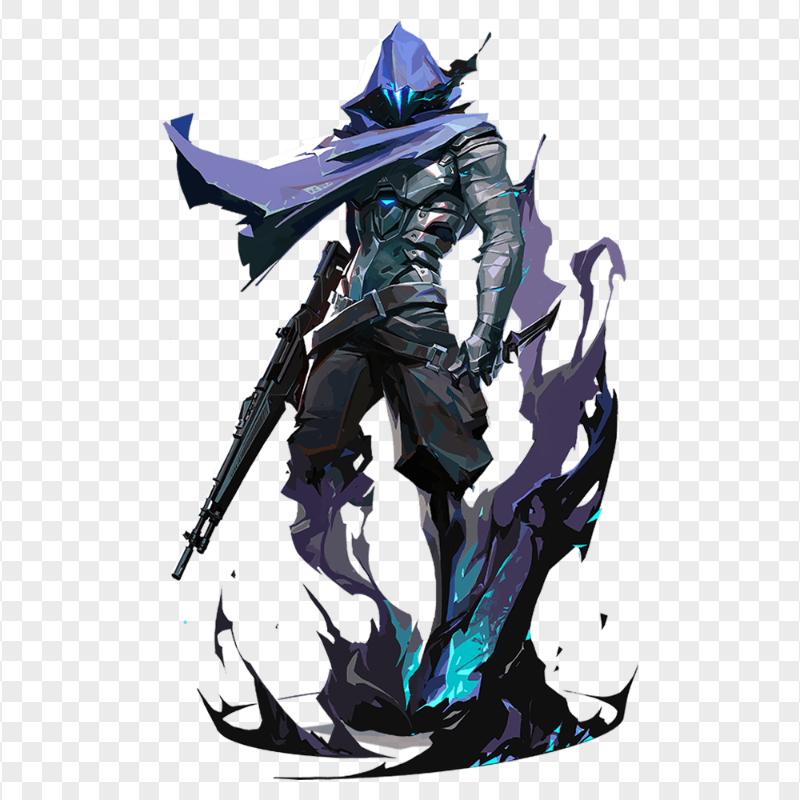
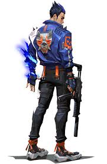

Valorant Boy Agents
| Image | Info | Abilities | |
|---|---|---|---|
| A phantom of a memory, Omen hunts in the shadows. He renders enemies blind, teleports across the field, then lets paranoia take hold as his foe scrambles to learn where he might strike next. |  | -(C)Shrouded Step -(Q)Paranoia -(E)Dark Cover -(X)From The Shadows |
|
|  | Japanese native, Yoru, rips holes straight through reality to infiltrate enemy lines unseen. Using deception and aggression in equal measure, he gets the drop on each target before they know where to look. | -(C)FakeOut -(Q)BlindSide -(E)GateCrash -(X)Dimensional Drift |
|
| KAY/O is a machine of war built for a single purpose: neutralizing radiants. His power to Suppress enemy abilities dismantles his opponents' capacity to fight back, securing him and his allies the ultimate edge. |  |
-(C)Frag/ment -(Q)Flash/drive -(E)Zero/Point -Empress (X) |
|
| Gekko the Angeleno leads a tight-knit crew of calamitous creatures. His buddies bound forward, scattering enemies out of the way, with Gekko chasing them down to regroup and go again. |  |
-(C)Mosh Pit -(Q)Wingman -(E)Dizzy -Thrash(X) |
|
| Hailing from the U.K., Phoenix's star power shines through in his fighting style, igniting the battlefield with flash and flare. Whether he's got backup or not, he'll rush into a fight on his own terms. | -(C)Blaze -(Q)Curveball -(E)Hot Hands -(X)Run It Back |